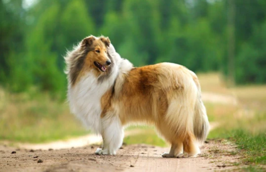

log lobox .my team
 This lovable Rough Collie that's always getting into adventures and saving the day first appeared in a short story in 1939, but since then appeared in novels, movies, TV shows and even video games! However, perhaps most known for the 19-season long TV show which aired from 1954 1973. Six different canine actors played the part, but the longest reigning was a dog called Baby who starred from 1960 1966.Even up to the recent 40 years, Lassie has been re-envisioned by aTV Series and a 2005 full-length film being made about the famous Collie.
log lobox .my team
Back to Hectors page
01/05/02